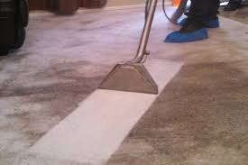

Does it really matter to Get Your Carpets Clean Every Year?

There are numerous reasons to get your carpets cleaned each year or at
the very least once every 18-month period. Another reason could be that
the carpet warranty typically requires Carpet Cleaning Fort Worth
each year, or else the warranty may be voided. While this isn't an
explanation on its own but it is an incentive to observe the principle.
What Really Is just beneath the surface
The real reason is that a variety of soils, sporesand oils and other
debris are absorbed into your carpets that are beyond the scope of what
regular vacuuming is able to take away. Cleaning your carpets properly
gets rid of these particles and improves not just the health of your
carpets, but also your overall health too. Cleansing your carpets
properly removes allergens that could affect the indoor air quality if
it is not maintained properly. Even if you don't notice dirt in their
carpets, does not mean it's not there. The most popular kind of carpet
cleaning method is Hot-Water Extraction also known as "Steam Cleaning."
This kind of carpet cleaning makes use of extreme hot water and pressure to penetrate into the carpet fibers, which loosens dirt, stains and other debris and then removing it. The two components pressure and hot water make up the level of service an expert can provide, far over renting a carpet cleaning machine from a retail store. Hot Water Extraction is the preferred method for carpet cleaning recommended by virtually all major carpet manufacturers, because of their own test guidelines and the results.
Still Resistant?
Also, if the carpet is stain-resistant or protected when you purchase
it the stain-blocking agent is likely to wear off over time. Making
sure your carpets are protected by products such as Scotchgard will
help keep the stain-resistant properties in place to ensure that
staining doesn't set on your carpet or padding. The majority of people
think that Scotchgard protection is a trick carpet cleaners are trying
to sell. However, If you study the information to learn more about
Scotchgard you'll realize the importance of this protection.
The more a Homeowner Suffers to save money, the More they save big Bucks!
carpet cleaning is best done when homeowners regularly clean their carpets. Both are essential for extending the lifespan of your carpets, enhancing the indoor air quality, and maintaining the highest worth for the home. Regularly vacuuming can help keep dust, allergens, and even insects like fleas and mites from causing health issues for both your pet and yourself.
Lastly...Comparing Apples to Microsoft
In the end, it's crucial to recognize that every Carpet Cleaning Fort Worth
doesn't work the same. The rental of a machine at your local
supermarket will not achieve the same results when you have them
professionally completed. A good professional will utilize equipment
that works more efficiently (either using a higher temperature for
Steam Cleaning, or specific chemicals and techniques that bond with
soils and lift them up to the surface - i.e. the encapsulation
technique) In addition, similar to companies that sell computers, Apple
and Microsoft even though they both offer computers, they approach this
in a different manner.
Carpet cleaning businesses are no different. Some will sacrifice quality and service in order to lure customers by offering a lower cost. Others, however, place emphasis on the quality of service, and satisfaction with their customers. If you are considering a carpet cleaner that is professional make sure you ask these basic questions to ensure that you're comparing similar services with the price that are quoted:
1.) What are the steps that are included in the price?
2.) Do your services include removal of stain? Do you offer carpet grooming?
3.) Do you have any type of satisfaction guarantee?
These simple questions will provide you with more information about what kind of service to expect from each firm in order to get the best quality cleaning for the money you spend. Now that you understand why it is essential to clean your carpets and what you should look for to look for, take a moment to remember the last time they were cleaned. You might want to consider placing your carpets on regular schedule for cleaning. Your pets, your carpets and loved ones will be grateful for it!